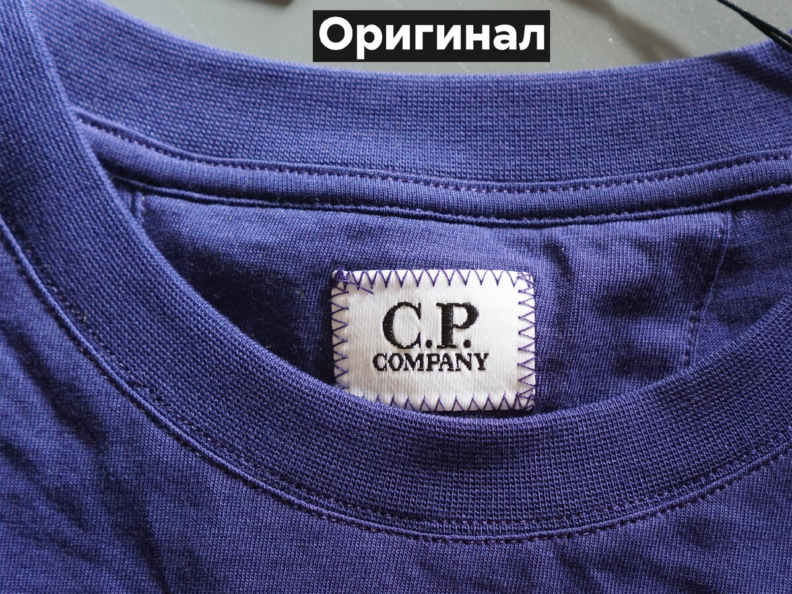
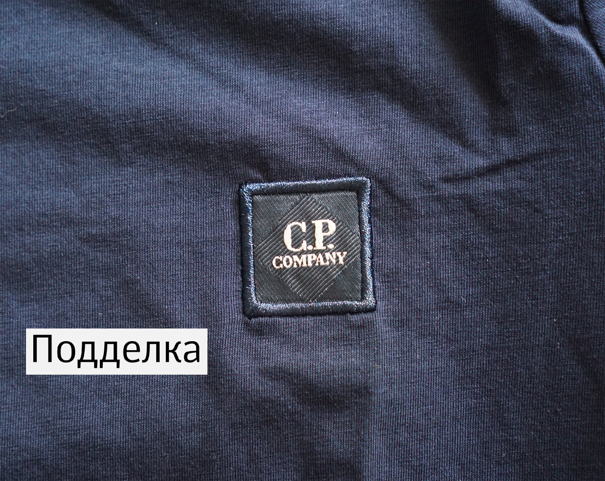

сеrtilogo
Проверьте подлинность вашего товара
Введите код с бирки или отсканируйте QR-код:
Проверить
Открыть сканер QR-кода
Результат проверки
Сделать новую проверку
Как отличить оригинал от подделки?
Оригинал

Подделка

Сканер QR-кодов
Запустить сканер
Остановить
Здесь появится результат сканирования...